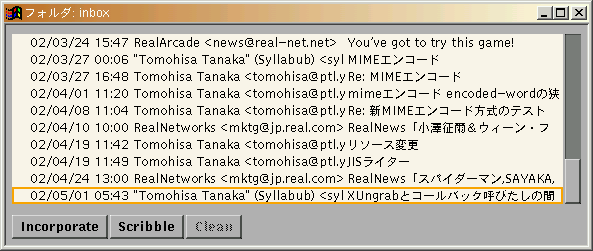
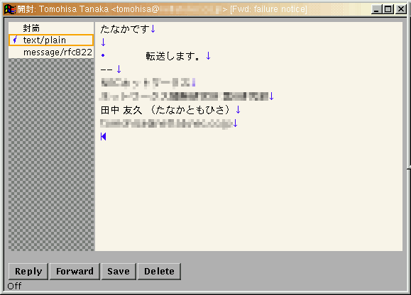
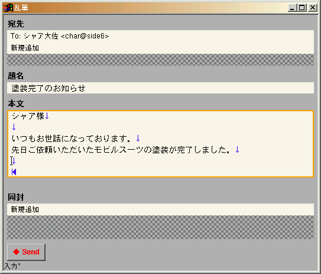

MIME対応の日本語MUA。
次のプラットフォームで動作を確認しました。
% gzip -dc breakseal-yyyymmdd.tar.gz | tar xvf - % cd breakseal/ % vi Imakefile † % xmkmf -a % make % make install % mkdir ~/.mailer % mkdir ~/.mailer/inbox % mkdir ~/.mailer/trash % mkdir ~/.mailer/sent
Breakseal.adの内容を~/.Xdefaultに追加するか、リソースデータベース††に追加します。
最低限、次のリソースは環境に合わせて設定する必要があります。
breakseal.catalog.deleteSpool: POP3サーバから新着メールを削除する場合はtrueを指定します。指定しない場合はfalseを指定したとみなし、サーバにメールを残したままにします。breakseal.scribble.smtpServer: SMTPサーバのホスト名。指定しない場合は「localhost」を使用します。breakseal.scribble.mailFrom: 送信者（Fromヘッダ）を表す文字列。指定しない場合は「ユーザ名@ホスト名」を使用します。breakseal.scribble.signatureFile: いわゆる署名ファイルのパスを指定します。Breaksealを実行したときに~/.mailer/defaultが存在しない場合は、POP3サーバとアカウントを問い合わせてくるので、次のように入力します。
% breakseal Server:POP3サーバのホスト名 User:POP3サーバのアカウント名 Password:POP3サーバのパスワード †††
入力した情報は、~/.mailer/defaultに保存されます。このファイルの中身を他人に見られないように注意してください。情報を変更する場合は、このファイルを消してからBreaksealを実行して、再度入力してください。
† Imakefileの編集
~/binにインストールされるようになっています。変更する場合はInstallBinDirをインストール先で定義します。UseKinput2を定義してください。MD5IncDirとMD5LibDirを適切に定義してください。†† リソースデータベース
xrdbでXサーバに登録したリソース。~/.xinitrcのなかでxrdb ~/.Xresourcesを実行して、Xサーバ起動時に登録する場合が多い。
通常、リソースデータベースが登録されている場合は~/.Xdefaultsは無視されます。そのため、xrdb ~/.Xdefaultsを実行してから~/.Xdefaultsを書き換えても、設定は反映されません。また、リソースデータベースはXサーバと関連付けられますが、~/.XdefaultsはXクライアントを実行しているホストと関連付けられます。設定が思い通りにならない場合は、これらの観点から調べると間違いに気付きやすいでしょう。
††† パスワードの入力
入力した文字はエコーバックされません。
フォルダにあるメールの一覧が表示されます。メールを選択すると、そのメールを開封ウィンドウで表示します。Incorporateボタンを押すと、POP3サーバから新しいメールを取り込みます。
Scribbleボタン

左側のペインにパートの一覧が、右側のペインにパートの内容が表示されます。左側のペインでパートを選択すると、右側のペインにそのパートの内容が表示されます。
Reply（返信）ボタンを押すと返信メールの作成ウィンドウを表示します。左側のペインで「テキストタイプのパート」を選択している場合のみ、返信ボタンを押すことができます。
Forward（転送）ボタンを押すと転送メールの作成ウィンドウを表示します。
Save（保存）ボタンを押すと保存ダイアログが表示されます。左側のペインで選択されているパートのみが保存されます。
Delete（消去）ボタンを押すとゴミ箱フォルダ（~/.mailer/trash）にメールを移動して、ウィンドウを閉じます。ただし、ゴミ箱フォルダのメールについては実際に消去します。
Imitate（複製）ボタン

上から順に、宛先一覧ペイン、題名編集ペイン、本文編集ペイン、同封一覧ペイン、送信ボタンが表示されます。宛先を追加するには宛先一覧ペインのなかの「新規追加」を選択します。宛先一覧ペインの宛先を選択すると、その宛先を変更、あるいは削除することができます。
添付ファイルを同封するには同封一覧ペインのなかの「新規追加」を選択します。ファイル選択ダイアログが表示されるので、ファイルを選択します。同封一覧ペインのファイルを選択すると、そのファイルを変更、あるいは削除することができます。
メールが完成したら、Send（送信）ボタンを押します。
